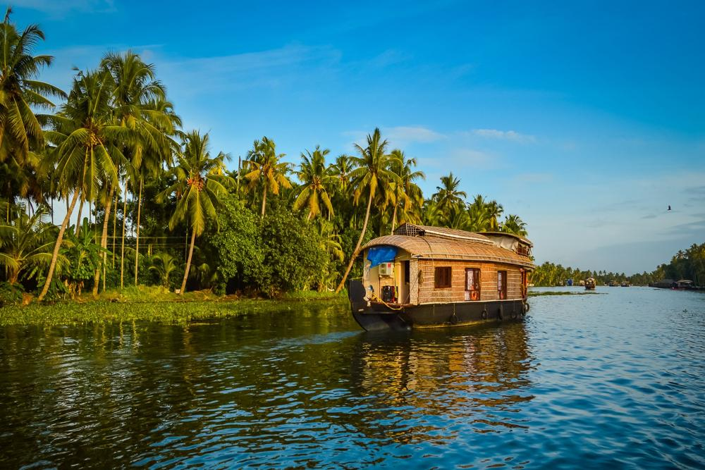
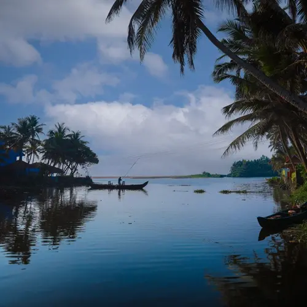

Kerala's backwaters and coastal life blend lush landscapes with an ancient culture. Spanning over 900 kilometers of lagoons, lakes, and canals, the waterways serve as vital arteries for local trade, transport, and fishing. This ecosystem is highly adapted to the water, offering a serene escape alongside vibrant, traditional village life.

Alappuzha, often referred to as Alleppey, is a picturesque city in the state of Kerala, known for its intricate network of canals, backwaters, beaches, and lagoons. Often dubbed the 'Venice of the East,' Alappuzha is a popular tourist destination, especially famed for its houseboat cruises that offer an immersive experience of Kerala's enchanting backwaters. This coastal city provides a perfect blend of natural beauty, cultural heritage, and serene water-based activities.
Backwaters and Houseboat Cruises
The backwaters of Alappuzha are a labyrinthine network of interconnected canals, rivers, lakes, and inlets, stretching over 900 kilometers. These tranquil waterways are fringed with lush greenery, coconut palms, paddy fields, and quaint villages, creating a charming landscape. Exploring these backwaters on a traditional houseboat, known as a 'kettuvallam,' is a quintessential Kerala experience.
Houseboats in Alappuzha are well-equipped with modern amenities, offering comfortable and luxurious accommodations on the water. These floating marvels are traditionally crafted using eco-friendly materials like bamboo, coir, and wood, maintaining an authentic charm while providing a unique travel experience.
Activities
Boat Races: Alappuzha is famous for its snake boat races, particularly the Nehru Trophy Boat Race. Held annually in August, this event features long, sleek boats rowed by teams of oarsmen in a thrilling competition that attracts visitors from all over the world.
Canoeing and Kayaking: For a more intimate experience of the backwaters, visitors can opt for canoeing or kayaking. These smaller vessels allow you to navigate the narrower canals and explore the hidden gems of the backwaters up close.
Ayurvedic Treatments: Alappuzha is known for its Ayurvedic wellness centers, offering various treatments and therapies based on ancient healing practices. Visitors can indulge in rejuvenating massages, herbal baths, and wellness programs to relax and revitalize.

Thiruvallam Backwaters, located near Thiruvananthapuram in Kerala, is a serene and unique destination featuring a network of interconnected canals, lagoons, and lakes that flow into the Arabian Sea. This picturesque waterbody is surrounded by rows of swaying coconut trees, creating a visual treat for visitors. Known for its tranquil beauty, Thiruvallam is a perfect getaway for a relaxing vacation, a family outing, or simply a retreat into nature's charm.
Veli Lagoon
Hidden away amidst lush and evergreen vegetation, this pictorial lagoon is located within a proximity to Trivandrum. Wearing a quaint outlook, Veli Lagoon offers an ample of fun-filled tourist activities to its visitors. Pedal boating, speed boating, and rowing are some of the most sought after activities around this lagoon
Akkulam Lake
If you are travelling with the junior member of your family, a visit to the scenic Akkulam Lake is a must for you! A beautiful mix of salubrious nature and a leisurely ambience, it also serves as a wonderful picnic spot.